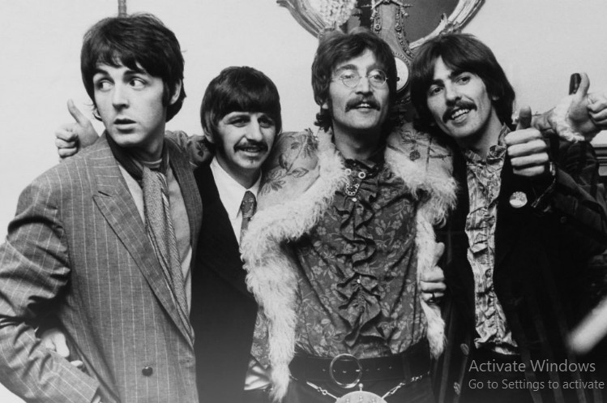
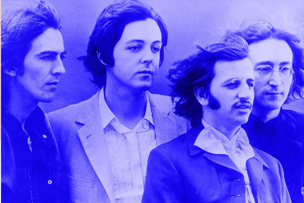
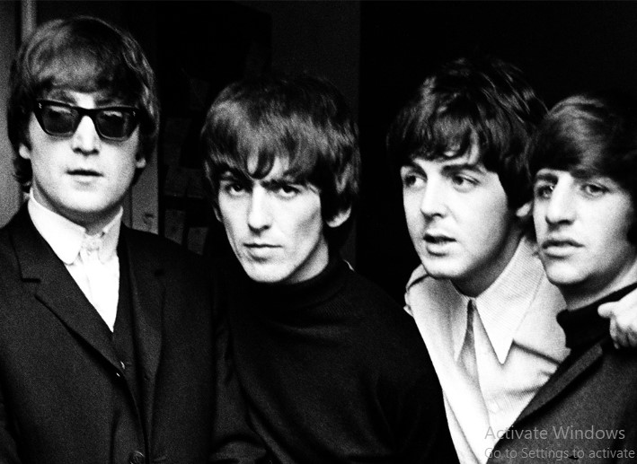
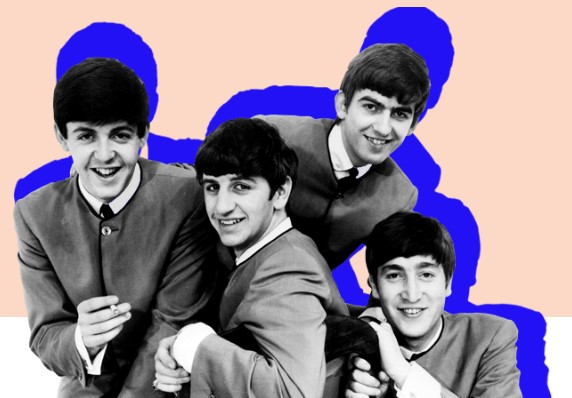

"I believe in everything until it's disproved. So I believe in fairies,the mythn,dragons. it all exists, even if it's in your mind. who's to say that dreams and nightmares aren't as real as thehere and now?"

The formar Beatle opens up about the band's split

Ringo Starr's copy of The White Album was stored in a vault for 35 yearsPaul McCartney has shared a video to accompany who Cares,from Egypt Station, which has an anti-bullying sentiment.The short film features Oscar-winner Emma Stone.McCartney said,"My hope is that...if there are kida being bullied,they might just think it's the kind of thing you can just stand up to and laugh off and get through."read about John Lennon
read about Paul McCartney

1963 UK tours (winter-autum)
The Beatles Winter 1963 Helen Shapiro Tour
Spring 1963 Tommy Roe/Chris Montez UK tour
Roy Orbison/The Beatles Tour
Autumn 1963 Sweeden tour
1966
List of the Beatles' live performance
In 1965, the company went public. Five million shares were created of which the original principals retained
3.75 million. James and Silver each received 937,5000 shares
1963 UK tours (winter-autum)
The Beatles Winter 1963 Helen Shapiro Tour
Spring 1963 Tommy Roe/Chris Montez UK tour
Winter 1964 North American tour
Spring 1964 UK tour
The Beatles' 1964 world tour
The Beatles' 1965 European tour
The Beatles' 1965 US tour
The Beatles' 1965 UK tour
The Beatles'1966 tour of Germany, Japan and the Philippines
The Beatles' 1966 US tour
1963196419651966
In the town where I was born Lived a man who sailed to sea And he told us of his life In the land of submarines So we sailed up to the sun Till we found a sea of green And we lived beneath the waves in our yellow submarine
We all live in a yellow submarine Yellow submarine,yellow submarine We all live in a yellow submarine Yellow submarine,yellow submarine
And our friends are all aboard Many more of them live next door And the band begins to play
We all live in a yellow submarine Yellow submarine,yellow submarine We all live in a yellow submarine Yellow submarine,yellow submarine
(Full speed ahead Mr.Boatswain, full spped ahead Full speed ahead it is,Sgt. Cut the cable,drop the cable Aye,Sir,aye Captain,captain)
YELLOW SUBMARINE
(John Lennon-PaulMcCartney)
Who would ever have thought that the "Lennon/McCartney"songwriting team would compose a song for Ringo to sing that was deemed good enough to be released as a single .In fact, enthusiasm was high ( quite possibly in the chemical sense as well) while it was being recorded ,much time being spent in getting it just right

Awards and achievements
In 1965, Queen Elizabeth || appointed Lennon, McCartney Harrison and starr Members of the Order of the British Empire (MBE).[128] The film Let it Be (1970) won the 1971 Academy Award for Best Original song score.[270] the recipients of seven Grammy Awards [400] and fifteen Ivor Novello Awards ,[401] the Beatles have been awarded six Diamond album, as well as 24 Multi-platinum album,
Beatles Quotes
"limitless undyling love which shines around me like a million suns it calls me on and on across the universe"
-John Lennon
<
>
The best-selling band in history, the Beatles have sold more than 800 million physical and digital albums as of 2013.